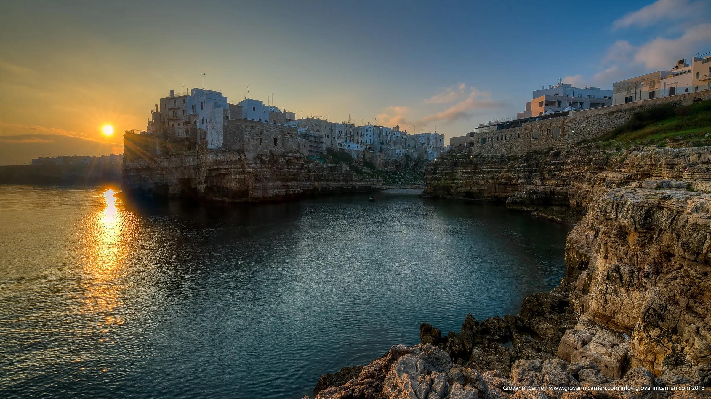
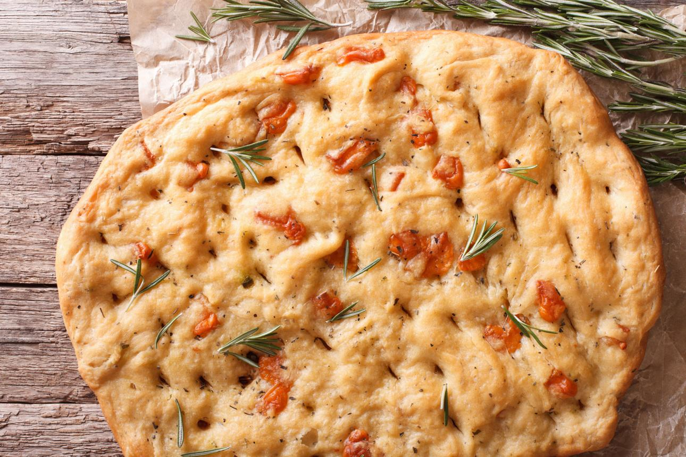
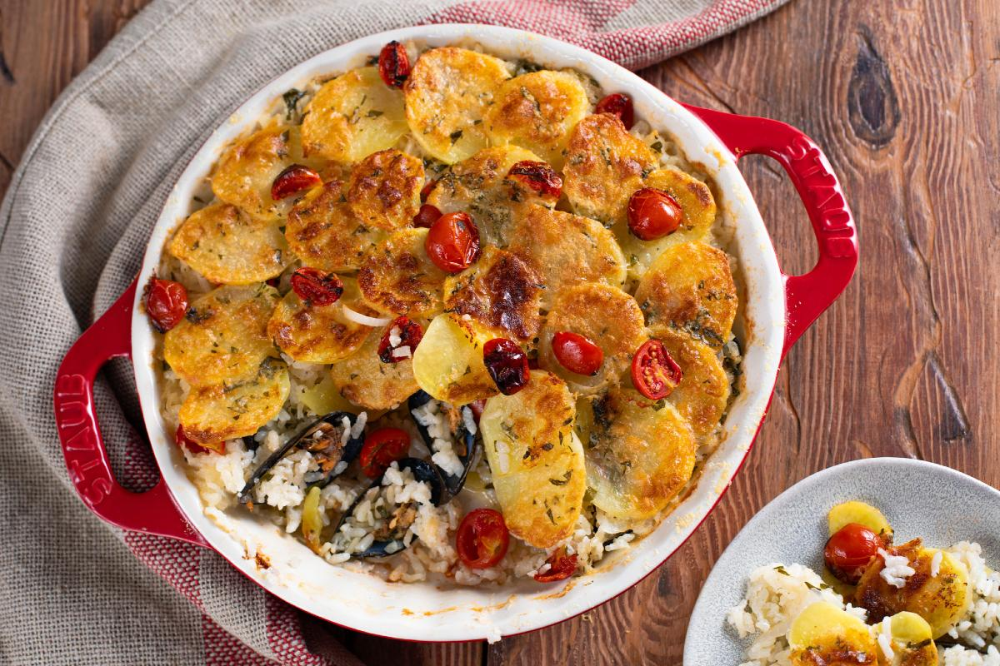
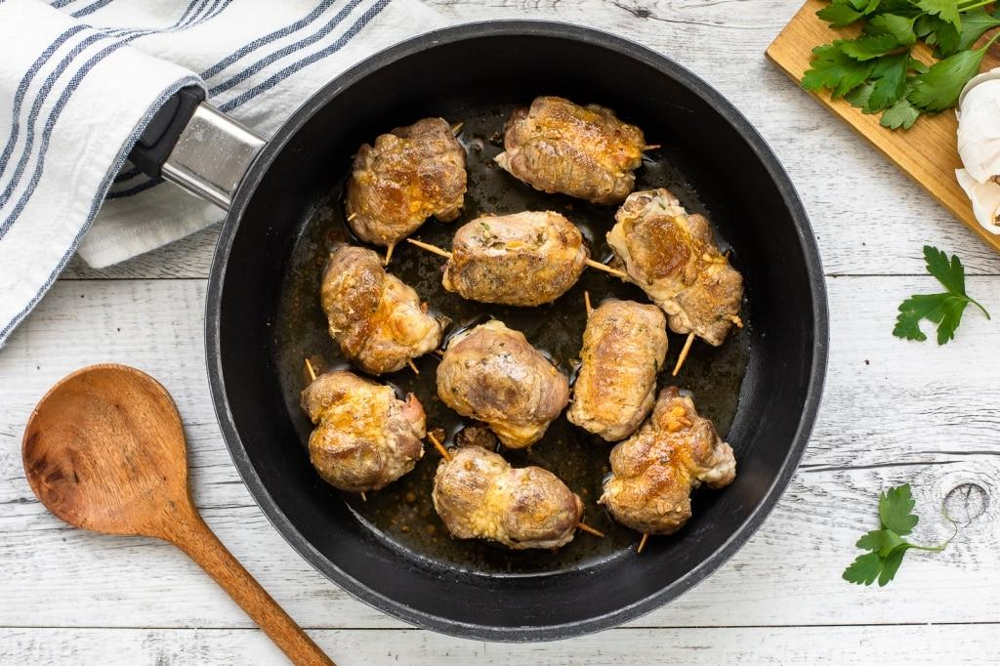
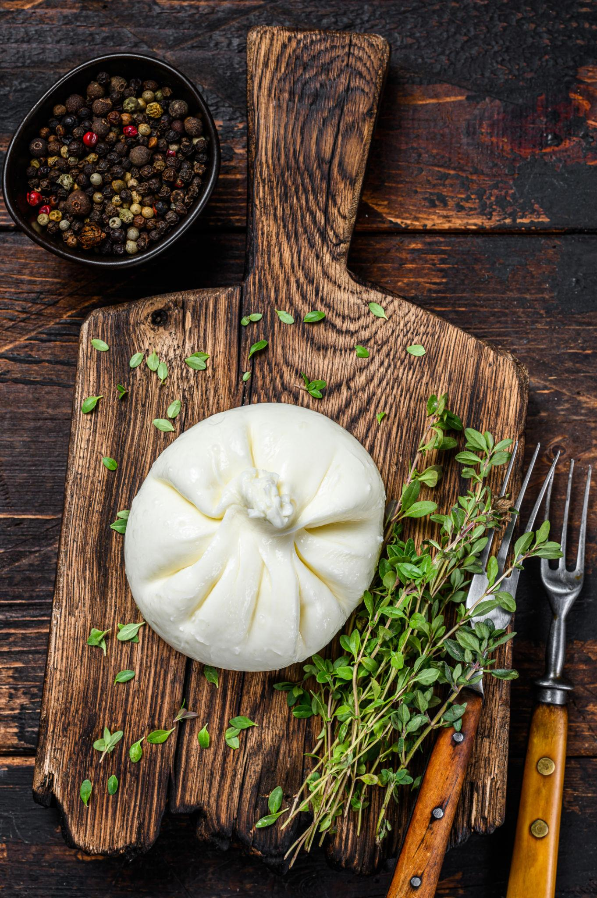
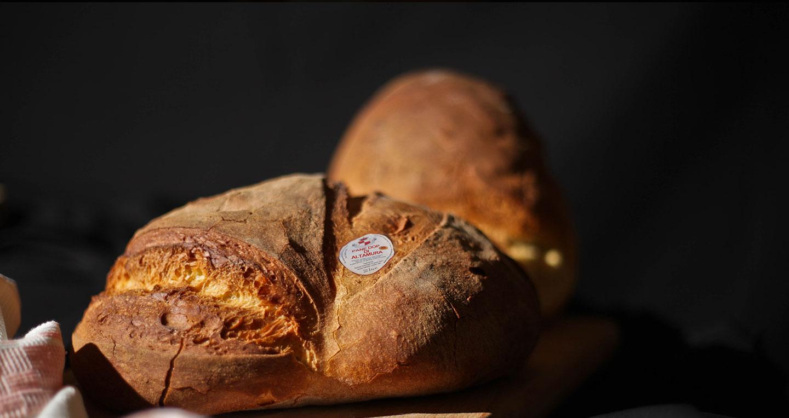
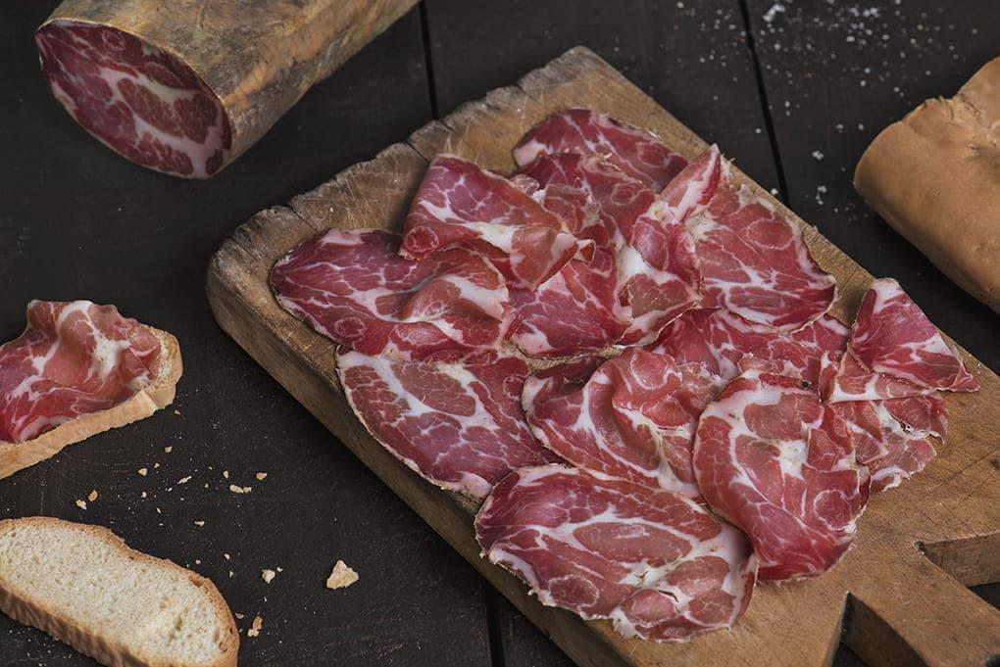

Polignano a Mare — Cala Porto, Cala Paura, Lama Monachile
Calette incastonate tra le falesie calcaree bianche del promontorio. Lama Monachile è la spiaggia-simbolo della città, patria di Domenico Modugno.
Bari è il capoluogo regionale della Puglia: una città vivace affacciata sull'Adriatico con un centro storico labirintico — Bari Vecchia — e una vita portuale ancora autentica. La sua provincia metropolitana racchiude la Valle d'Itria con i celebri trulli di Alberobello (patrimonio UNESCO dal 1996), le spettacolari Grotte di Castellana, e la costa con le calette di Polignano a Mare. Dal Parco Nazionale dell'Alta Murgia ai borghi barocchi come Martina Franca, ogni angolo della provincia offre un'esperienza diversa.

Alta, morbida, con olive nere Caggia e pomodorini. L'impasto è idratato con acqua di patate per la consistenza inconfondibile.

Pasta di pane fritta ripiena di pomodoro e mozzarella. Lo street food più amato di Bari, da mangiare bollente.

Riso, patate e cozze cotti in tegame. Piatto povero diventato simbolo gastronomico dell'intera regione.

Involtini di capocollo ripieni di caciocavallo, cotti alla brace nelle macellerie-fornelli della Valle d'Itria.

Involucro di mozzarella ripieno di panna e stracciatella. Da consumare freschissima, entro 24 ore dalla produzione.

Pane di semola di grano duro, a lievitazione naturale, con crosta dorata spessa e mollica gialla. Primo pane DOP d'Italia.

Salume affumicato con erbe aromatiche locali. Presidio Slow Food, prodotto secondo un disciplinare antico nella Valle d'Itria.
Diving e kayak a Polignano a Mare — grotte sottomarine, archi naturali
Ciclovia dell'Acquedotto Pugliese — 500 km totali, tratto Valle d'Itria percorribile in bici
Canale di Pirro — itinerario Alberobello-Locorotondo, 20 km per trekking e MTB
Fasano Zoo Safari — secondo parco faunistico europeo per dimensioni